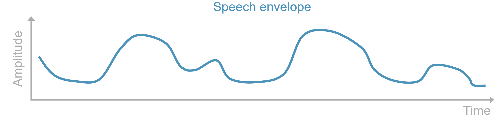
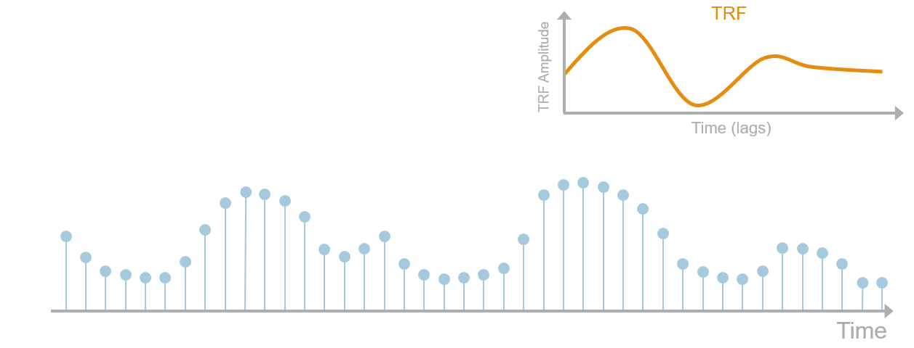
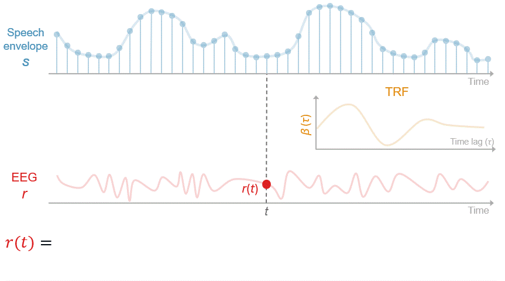
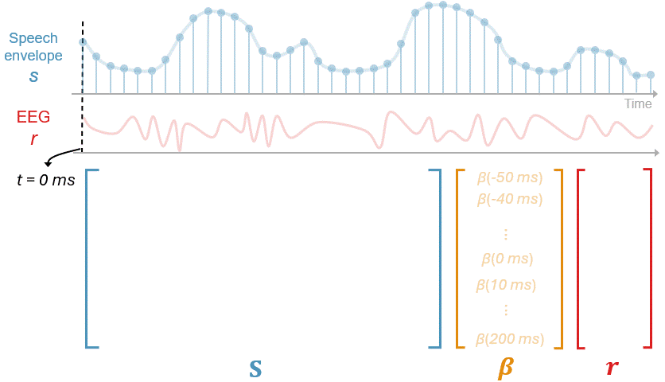
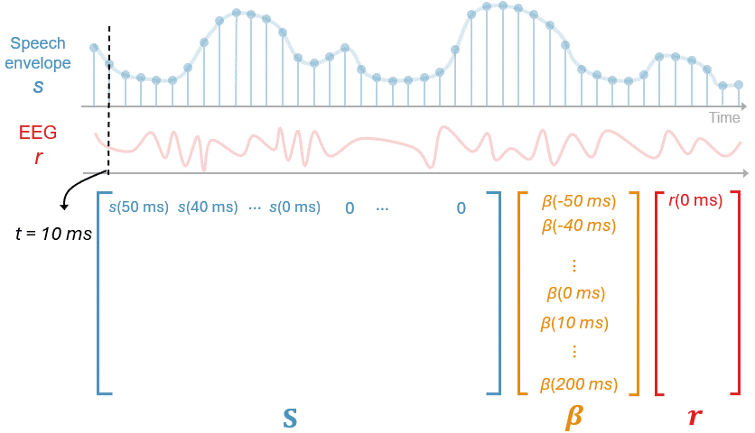

Introduction
The temporal response function (TRF) is an analytic technique widely used to model the linear mapping relationship between continuous, time-varying stimuli such as audiobooks, spoken sentences, and videos and brain signals (EEG, MEG, etc.). It allows you to:
-
Estimate the brain's impulse response to stimuli.
You can construct a TRF model to predict neural responses from one or more stimulus features (e.g., speech envelope, pitch). Such a model is called a forward or encoding model. With it, you estimate a TRF that represents the brain's impulse response to a particular stimulus feature. Conceptually, you may think of it as being analogous to a traditional event-related potential (ERP) elicited to short, relatively static stimuli (e.g., tones, speech syllables).
-
Assess which stimulus features predict neural responses
By including multiple stimulus features in an encoding TRF model, you can also determine which features contribute to predicting neural responses. In this case, we're doing multivariate TRF, often abbreviated as mTRF. Measures like Pearson correlation between predicted and actual neural resposnes and proportion of variance explained are typically used as metrics of prediction accuracy or neural tracking. If including a stimulus feature significantly improves neural tracking, it is taken as evidence that the feature is tracked/encoded in the brain.
-
Reconstruct the stimuli from neural responses
By reversing the relationship between stimuli and neural resposnes in a forward model, you can readily build a backward or decoding TRF model that predicts stimulus features from neural responses. In speech listening tasks, this backward model is popularly used to reconstruct the broadband envelope of the target speech as an index of auditory attention. Again, reconstruction accuracy can be quantified using metrics like Pearson correlation between the actual envelope and the reconstructed envelope.
The rest of this introduction will provide a more detailed overview. In addition, it is highly recommended to read through these two papers:
-
Brodbeck et al. (2023). Eelbrain, a Python toolkit for time-continuous analysis with temporal response functions. This article provides an excellent introduction to TRF analysis and to the Python
eelbeainpackage, on which many utilities inneuraspeechare built. If you'd like to develop a deeper technical understanding of the functions and analyses used here, it is strongly recommended to familarize yourself with usingeelbrain. -
Crosse et al. (2016). The multivariate temporal response function (mTRF) toolbox: A MATLAB toolbox for relating neural signals to continuous stimuli. This is a classic mTRF paper that introduces the MATLAB mTRF toolbox. Though we won't use MATLAB here, it's a good reading for udnerstanding the math behind TRF analysis. Of course, if you'll be using MATLAB, read through it and get familiar with the toolbox.
Event-related potential
As mentiomed above, the TRF is closely related to the ERP, which has been an engine of neuroscience discoveries for many decades. In a typical ERP paradigm, the same stimulus or stimuli of the same type, condition, etc. are presented over many repetitions. The recorded responses are epoched from stimulus onset and averaged to derive the ERP, which represents the brain's typical response to the stimuli. We then look at the amplitudes of the ERP peaks/valleys, the latencies of these peaks/valleys, the topography, the differences between conditions or participant groups, etc.
Here we implictly assume that the stimulus can be reduced to an instantaneous, impulse-like event beginnign at its onset, even though it actually has a duration. You may be comfortable with this assumption for relatively short, static stimuli like simple "ba/ga" syllables or a flash of an image. But what if your stimuli or the features you're interested in are continuous and change dynamically over time, such as the amplitude envelope of audiobook speech? Are there ways to estimate ERPs or relate such stimuli to brain responses?
TRF to continuous speech
Below is how the TRF address these questions. Let's consider EEG to broadband speech amplitude as an example. Think of the envelope as consisting of a dense, continuous train of impulses with each impulse's height scaled to the amplitude value, as illustrated in this image:

Each impulse is then assumed to evoke a response across time lags, like an ERP, with larger impulses evoking larger responses:

The "ERP" that corresponds to the unit impulse (i.e., impulse with amplitude of 1) is called the TRF of the envelope.
Now we'll relate the envelope to the EEG signals through this TRF. As you can see in the above diagram, the impulses have overlapping influence in time. So as shown in the following animation, the EEG response at time \(t\), denoted as \(r(t)\), reflects influence from the envelope across multiple time lags. Specifically, it is the TRF (denoted as \(\beta\)) at 0-ms lag scaled by the envelope (denoted as \(s\)) at \(t\) (i.e., \(\beta(0\) \(ms)s(t)\)), plus the TRF at 10-ms lag scaled by the envelope 10 ms ago (i.e., \(\beta(10\) \(ms)s(t-10\) \(ms)\)), plus the TRF at 20-ms lag scaled by envelope 20 ms ago (i.e., \(\beta(20\) \(ms)s(t-20\) \(ms)\)), and so on.

In this example the interval between time lags is 10 ms corrsponding to a sampling rate of 100 Hz and the lags range from 0 ms to 200 ms. However, the same principle applies to data of any sampling rates and you can use any arbitrary minimum and maximum time lags, denoted as \(\tau_{min}\) and \(\tau_{max}\), respectively. So the formula at the end has a more general form:
Mathematically, what this formula is doing is called linear convolution: the continuous EEG response can be obtained by convolving the envelope with the impulse response function, namely its TRF.
Three additional things to be noted about this formula:
-
Since EEG is the dependent variable being predicted, the envelope (or stimulus features in general) is also referred to as a predictor.
-
\(\tau_{min}\) and \(\tau_{max}\) form the window over which the TRF is defined are hyperparameters you need to decide before model fitting. The appropriate range of time lags depends on your hypotheses about the timescale or latency of neural responses to the stimulus features of intetest. For higher-order linguistic features, you may want to increase \(\tau_{max}\) beyond 500 ms to capture later responses. For acoustic features like envelope, \((\tau_{min}, \tau_{max}) = (-100\) \(ms, 500\) \(ms)\) should be a good staring point. Note that you can include negative lags like \(\tau_{min} = -100\) \(ms\). In this case, we're modeling anticipatory or predictive brain responses to the stimuli. To see this, try plugging in a negative lag in the formula above.
-
\(\beta(\tau)\) is sometimes called a filter kernel because the stimulus is convolved with it to predict the neural response. You may also see some people call it TRF weights/coefficients, reflecting the fact that, as we'll see, solving the TRF can be framed as solving a linear regression problem. Other common notations include \(h(\tau)\) and \(w(\tau)\). Unless otherwise specified, these terms and symbols generally refer to the same lag-dependent function.
We'll dive a little bit deeper into how to estimate the TRF and the math behind it in later sections. For now, we have a tool to finding out the "ERP" to a continuous stimulus feature and using it to predict neural responses.
Multivariate TRF
To include multiple stimulus predictors, simply extend the TRF model as follows:
The inner summation convolves each stimulus predictor \(s_i(t)\) with its corresponding TRF while newly added the outer summation combines the predicted contributions of all \(N\) predictors. In other words, the model estimates a separate TRF for each stimulus feature and sums their contributions to predict the neural response. We'll use such mTRF models more frequently than the single-predictor model above when analyzing EEG to naturalistic speech containing multiple features. These features may include amplitude envelope across several frequency bands (i.e., a spectrogram), a combination of the envelope, pitch contour, and phonological features, etc.
Sometimes not all stimulus predictors contribute to explaining brain responses. To find out which ones do, we can, for example, quantify the neural tracking as the Pearson's correlation between the observed and predicted EEG. Predictors that improve the correlation when added to the model are thought to be encoded/tracked by the brain.
The predictors don't have to be continuous curves like envelope. Impulse-like predictors can be used to model features like word suprisal. In such a predictor, an impulse scaled to the surprisal value of each word is placed at each word's onset and the rest of the predictor is filled with zeros.
You can include as many predictors as you want, from acoustics to abstract linguistic annotations derived from sophisticated language models (e.g., Xie et al., 2023; Broderick et al. 2018; Gillis et al., 2023). If there are visual stimuli, visual features like video frame luminance and motion (e.g., Yu et al., 2022) can also be included.
Time-lagged linear regression
Now we address the elephant in the room: we still don't know the TRF(s).
Let's look again at the derivation of the formula in the animation above. You may have noticed that it looks like the multiple regression formula \(y = \beta_0 + \beta_1x_1 + \beta_2x_2...\) you saw in intro to statistics courses and the EEG response is predicted as a linear combination of the envelope amplitude values. So in fact, we can convert the convolution into a regression problem.
To do this, we'll prepare the stimulus features just like how we prepare the dataframes in R and Python, where each row is an observation and each column is an independent variable. To illustrate the preparation, consider a simple example with amplitude envlope as the sole predictor and one EEG signal. Let's assume that the sampling rate is 100 Hz, the lag window defined from \(\tau_{\min} = -50\) \(ms\) to \(\tau_{\max} = 200\) \(ms\), and the entire EEG/envelope duration is 60,000 ms (1 minute).
We first need a 2D matrix, denoted as \(\mathbf{S}\), where rows are time-lagged slices of the envelope that will each be multipled by the TRF, which we now write as a column vector \(\boldsymbol{\beta}\). To build it, set each cell \(\mathbf{S}_{t, \tau}\) = \(s(t-\tau)\). For the first row at \(t\) = 0 ms, the beginning of EEG/envelope, we fill it accordingly starting at time lag \(\tau=\tau_{min}=-50\) \(ms\) and get \(s(0\) \(ms-(-50\) \(ms))\)=\(s(50\) \(ms)\) in the first position, move one sample (i.e., 10 ms) in time lag forward and get \(s(0\) \(ms-(-40\) \(ms))\) = \(s(40\) \(ms)\) in the second position, and so forth. Note that because we have negative lags here and are modeling predictive/anticipatory responses (see above), we have envelope values from the future (i.e., \(s(50\) \(ms), s(40\) \(ms)...\)). When \(\tau=0\) \(ms\), we're at the current time point. However, when \(\tau\) turns positive, like 10 ms or 20 ms, we have \(s(-10\) \(ms)\), \(s(-20\) \(ms)\), and so on. As there's nothing before the beginning of the envelope, we set them to 0. Finally, we multiply the whole first row elementwise with the TRF and sum the results to predict the EEG value at \(t=0\) \(ms\), or \(r(0\) \(ms)\).

We repeat the same operation for all rows to populate the rest of the matrix. At the very last time point \(t = 60,000\) \(ms\), negative lags give you non-exisiting envelope values out of bounds like \(s(60,010\) \(ms)\), so again they're zeroed out.

Now we have reformualted the convolution as a system of linear equations:
where \(\mathbf{r}\) is the EEG signal represented as a vector. Its length in samples, denoted as \(T\), depends on the duration of EEG data and the sampling rate. \(\mathbf{S}\) has dimensions \(T\times L\), where \(L\) is the length of the TRF in samples.
If you've learned linear algebra before, you can easily solve for the TRF using the normal equation:
This closed-form solution gives you the best-fitting TRF that minimizes the squared errors between the actual and predicted EEG.
Regularization
However, in practice, we don't use the normal equation. Like any other machine-learning models, the issue is overfitting. With the normal equation your model can fit almost perfectly to the EEG data at hand but generalize very poorly to new data. This is an espeically tricky issue for EEG as EEG signals tend to have low signal-to-noise ratios. To combat overfitting, we need regularization.
To see how it works, consider this "math/logic" test you may have seen online: what is the next numnber ? in this sequence?
The most intuitive answer is 9. You can also easily describe this intuition using the forumla \(f(x) = 2x - 1\), which gives you the odd number sequence (\(f(1) = 1, f(2) = 3, f(3) = 5, f(4) = 7, f(5) = 9\)). However, you can actually construct a function that hits 1, 3, 5, and 7 in the first four terms but gives you an arbitrary number of your choice like 67, 2,026, 31,415,926 for the next term (using Lagrange interpolation). For example, when \(f(x) = \frac{29}{12}x^4 - \frac{145}{6}x^3 + \frac{1015}{12}x^2 - \frac{713}{6}x + 57\):
And the next term f(6) is 301. Yet, as the simpler odd-number function also correctly yields 1, 3, 5, and 7 and probably generalize better, it is preferred over the complex function with crazy large coefficients for all polynomial terms. So all other things being equal, we resort to simpler models with simpler assumptions or less extreme coefficients to prevent overfitting, and this is called regularization.
One way to achieve regularization in linear regrssion problems is to explicitly penalize large weights/coefficients. In the context of TRF modeling, we want our TRF curve to be constrained without large postive or negative deflections. To do this, we define a loss/cost function \(\mathcal{L}(\boldsymbol{\beta})\):
The prediction error term is the sum of squared differences between the predicted and observed EEG responses, which the normal equation minimizes. The \(\left\|\boldsymbol{\beta}\right\|_1\) is the \(\ell_1\) norm of the TRF vector, which is the sum of the absolute values of all TRF wegiths (\(\left\|\boldsymbol{\beta}\right\|_1 = \sum_{j} \left|\beta_j\right|\)). \(\lambda\) is a regularization hyperparameter that controls how much penalty you want. And then the best-fitting TRF is the one that minimizes the whole loss function (not just the squared errors):
Here we're doing an \(\ell_1\)-regularized regression and the \(\ell_1\) penalty is also called the Lasso penalty.
You can also do \(\ell_2\)-regularized or ridge regression using the \(\ell_2\) penalty:
where \(\left\|\boldsymbol{\beta}\right\|_2^2 = \sum_{j} \beta_j^2\). This is the type of regularization used in the MATLAB mTRF toolbox (Crosse et al., 2016)), which has a closed-form solution.
The \(\ell_2\) penalty shrinks TRF weights smoothly to small but non-zero values, while the \(\ell_1\) penalty is more like to just zero out some of the weights. (This has to do with the gradients of these two types of penalties: the gradient for \(\ell_2\), \(2\lambda\boldsymbol{\beta}\), depends on \(\boldsymbol{\beta}\), so the pull towards zero becomes smaller as \(\boldsymbol{\beta}\) gets smaller. In contrast, \(\ell_1\) exerts a constant pull toward zero that only depends on \(\lambda\), which may zero small weights.) So you can say that the \(\ell_1\) penalty is doing both regularization and feature selection (TRF weights that are exactly zeros can be discarded as being irrelvant).
You can try to have the best of both worlds by using the elastic net penalty, which combines \(\ell_1\) and \(\ell_2\) (Zou & Hastie, 2005):
where \(\alpha\) is another hyperparameter that ranges between 0 and 1 and controls the balance between the types of penalties.
The above are just some of the many different tricks to prevent overfitting. Currently, elastic net TRF is not implemented in the MATLAB mTRF toolbox or Eelbrain, but now you have the working knowledge about how to implement it if you're interested. One important thing to note is that Eelbrain, which we'll be using to run TRF models in neuraspeech, uses the boosting algorithm together with early stopping and cross-validation to estimate TRFs and minimize overfitting. A detailed overview of the algorithm is beyond the scope of this introduction and you're encouraged to learn more about it in the Eelbrain paper. The bottomline is: the TRF analyses you'll be doing through packages like Eelbrain or mTRF toolbox are essentially time-lagged linear regression with some flavor of regularization.
Linear and time-invariant
The TRF analysis assumes that the brain is a linear, time-invariant system. You can clearly the linearity assumption from the fact that the neural response is predicted as linear combination of the stimulus features. Time invariance comes from the fact that the TRF \(\beta(\tau)\) depends only on the time lag \(\tau\) but not \(t\). A stimulus event should always evoke the same neural responses regardless of when it occurs during the recording. These may be an oversimplification of the complex brain dynamics, so be cognizant of the assumptions when interpreting TRF results.
Stimulus reconstruction
A backward, decoding (m)TRF model can also be used to predict or reconstruct stimulus features from neural responses. Consider the same simple case with just the broadband envelope and one EEG signal and set the time lag window \((\tau_{min}, \tau_{max}) = (-100\) \(ms, 500\) \(ms)\). The TRF model to reconstruct envelope from the EEG is:
Now the stimulus feature is the dependent variable and the EEG signal is the predictor. Note that the input of \(r\) is \(t+\tau\), not \(t-\tau\). To make sense of this, think iof the lag \(\tau\) is the delay of the brain response respective to stimulus events. Typically, when an event occurs, the evoked response occurs later. Suppose that we're at \(t = 5,000\) \(ms\) of the stimulus, then the EEG from \(5,000\) \(ms\) to \(t + \tau_{max} = 5,000\) \(ms + 500\) \(ms= 5,500\) \(ms\) is the portion of the EEG signal reflecting the influence of our current stimulus impulse. And recall that negative lags capture anticipatory responses. At \(t = 5,000\) \(ms\), the response in anticipation of the current event is between \(t+\tau_{min}=5,000\) \(ms+(-100\) \(ms)=4,900\) \(ms\) and \(5,000\) \(ms\). So EEG samples from -4,900 ms to 5,500 ms are the predictors for the envelope at \(t = 5,000\) \(ms\).
If EEG was recorded at multiple electrodes, we can includle all of them to jointly reconstruct the envelope using the decoding counterpart of the multivariate TRF model above:
Now \(N\) is the number of EEG electrodes instead of the number of stimulus predictors.
The decoding model is commonly used in the auditory attention decoding (AAD) paradigm to assess selective attention. Participants listen to speech from multiple talkers while EEG is being recorded. The broadband speech envelope of each talker is extracted and contructed using the decoding TRF model and correlation between the actual and reconstructed envelope is measured. The talker for whom the correlation is highest is regarded as the talker that the listener was paying attention to.